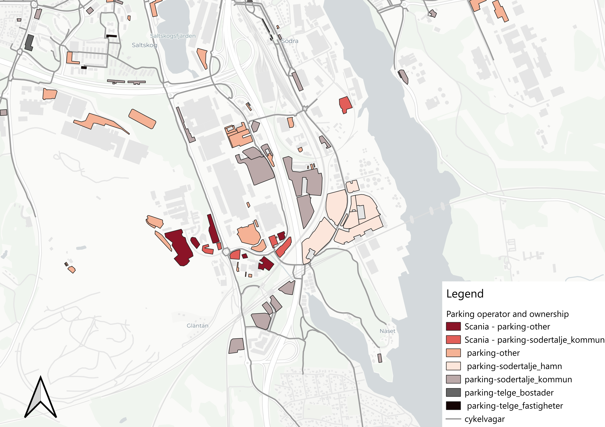

Surface Parking Optimization in Södertälje
Project Overview
This project explores how surface parking can be re-evaluated to build more resilient and climate-adapted cities. Sprawling asphalt footprints lock up strategic land, aggravate urban heat island effects, and increase impervious surface runoff. By reducing unneeded surface paving and integrating these spaces with sustainable mobility networks, land can be unlocked for green infrastructure, active transport, and community use.
While this study focuses specifically on spatial evaluation and tiering of parking lots, it forms part of a broader process examining how land-use planning and sustainable mobility intersect to support long-term urban resilience. ## Analytical Logic & Workflow
Rather than treating all parking lots uniformly, a logical, step-by-step filtering workflow was implemented:
- Land Use & Ownership Categorization: Parking lots were first categorized based on land ownership and operator type (such as municipal land, industrial operations, and commercial holdings) to identify management structures.

- Multi-Criteria Evaluation: Multiple distinct factors were evaluated simultaneously for every parcel by combining land ownership, spatial area thresholds (\(\ge 1,000\text{ m}^2\) or \(\ge 800\text{ m}^2\)), and edge-to-node walking distances to public transport stops.
- Feasibility & Intervention Tiers: By integrating these criteria together, lots were classified into actionable intervention tiers. This allows planners to evaluate which sites are most feasible for surface reduction, public land release, industrial pooling, or ecological depaving.
| Intervention Tier | Target Criteria / Focus | Action / Strategy |
|---|---|---|
| Tier 1 | Public Land | Sustainable Mobility & Public Space Reallocation |
| Tier 2 | Industrial Holdings | Industrial Parking Coordination |
| Tier 3 | Surface Parking Lots | Surface Parking Conversion / Potential Conversion |
| Further Assessment | Unclassified / Mixed Parcels | Requires Detailed Local Feasibility Study |
Note: Minimal literature and theory review was conducted for this exploratory phase, so these findings should be viewed with a pinch of salt.